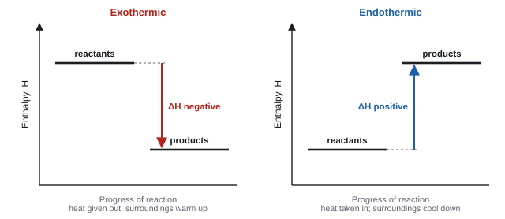
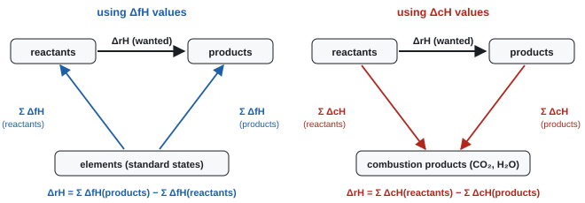
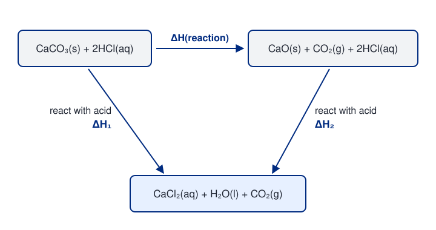
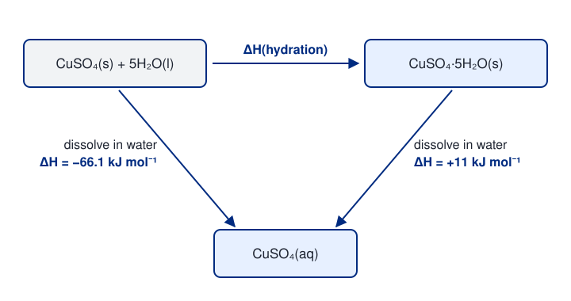
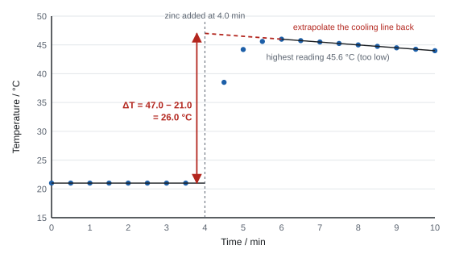
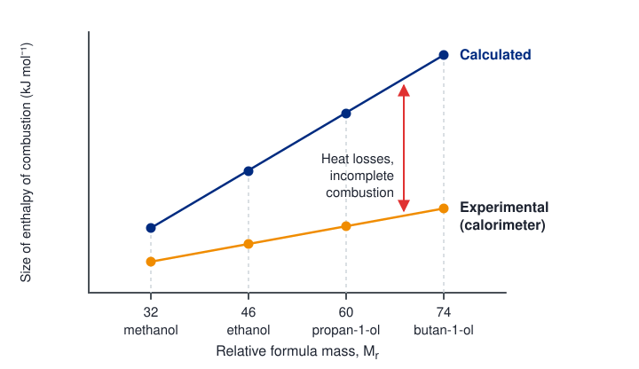

Energetics
Every chemical reaction takes in or gives out energy, because bonds have to be broken and new ones made. This topic shows you how to define, measure and calculate these enthalpy changes: with a thermometer and a polystyrene cup, with Hess cycles that find values nobody can measure directly, and with bond enthalpies.
Spec6.1Enthalpy change and standard conditions
Know that ΔH is the heat energy change measured at constant pressure, and that standard conditions are 100 kPa and a stated temperature, usually 298 K.
What ΔH means
- Enthalpy (H) is the heat energy stored in a substance. You can't measure it directly, but you can measure the change, ΔH, when a reaction happens.
- ΔH is the heat energy change measured at constant pressure. A reaction in an open beaker or a polystyrene cup is at constant (atmospheric) pressure, so the heat it gives out or takes in is ΔH.
- Units: kJ mol⁻¹, i.e. per mole of the reaction as written in the equation (or per mole of the named substance in a definition).
- System = the reacting chemicals. Surroundings = everything else: the water or solution, the container, the air. A thermometer measures the surroundings.
Standard conditions
| Condition | Value |
|---|---|
| Pressure | 100 kPa (10⁵ Pa) |
| Temperature | a stated temperature, usually 298 K (25 °C) |
| Solutions | 1 mol dm⁻³ |
| Substances | in their standard states: their normal physical state at 100 kPa and 298 K (e.g. H₂O(l), C(s, graphite), Br₂(l), O₂(g)) |
- A standard enthalpy change is written with the symbol ⦵, e.g. ΔH⦵298. The temperature is "usually" 298 K because data can be quoted at other temperatures as long as the temperature is stated.
- State symbols matter. H₂O(l) and H₂O(g) have different enthalpies: condensing steam releases heat. So ΔH for a reaction making liquid water is more negative than one making steam. Always write state symbols in enthalpy equations.
- Standard conditions: "298 K / 25 °C" and "100 kPa / 1 atm / 101 kPa / 1 × 10⁵ Pa". ACCEPT "a specified temperature".
- DO NOT ACCEPT "298 °K", or a wrong unit such as "101 Pa". "Room temperature" alone is ignored.
- Final answers to enthalpy calculations need a sign and units (kJ mol⁻¹) for the last mark.
Often asked as: part of a definition ("…under standard conditions, which are…"), or the sign-and-units mark at the end of a calculation.
Writing "standard conditions" when you mean "standard states". Conditions are pressure and temperature; states are the physical states of the substances (WCH12 Jan 2024 examiner report).
Leaving out state symbols in an enthalpy equation.
Spec6.2Sign convention: exothermic and endothermic
Know that exothermic reactions have a negative ΔH and endothermic reactions a positive ΔH.
| Exothermic | Endothermic | |
|---|---|---|
| Heat | given out to the surroundings | taken in from the surroundings |
| Temperature of surroundings | rises | falls |
| Products compared with reactants | lower enthalpy | higher enthalpy |
| Sign of ΔH | negative (ΔH < 0) | positive (ΔH > 0) |
| Examples | combustion, neutralisation, most oxidation, respiration, displacement | thermal decomposition (e.g. CaCO₃), photosynthesis, dissolving NH₄NO₃, KHCO₃ + HCl |
- The sign describes the system. When the system loses heat, its enthalpy falls, so ΔH is negative, even though the thermometer reading goes up.
- Bond breaking is endothermic; bond making is exothermic (see 6.9). Whether the overall reaction is exo- or endothermic depends on which is bigger.
Use the experiment to check your sign before you write the answer. Temperature went up → ΔH negative. Temperature went down → ΔH positive. A thermal decomposition must come out positive; if yours is negative, recheck the cycle.
- "Heat energy is released (to the surroundings)" for exothermic; "heat energy is absorbed / taken in" for endothermic.
- The final calculation mark is usually "answer with correct sign and units".
Often asked as: the sign of a calculated ΔH, or "explain why this reaction is exothermic" from a temperature change.
Examined in past papers even though the spec doesn't list it.
A temperature rise means the reaction is exothermic, so ΔrH must be given as negative even when the question doesn't remind you (WCH12 Jan 2024).
A thermal decomposition must be endothermic: examiners expect you to notice a negative answer is wrong (WCH12 Jun 2019).
A "negative temperature change" is never credited: describe a temperature fall and a positive ΔH (WCH12 Jan 2022).
Saying neutralisation "requires energy". That implies it is endothermic; it releases energy (WCH12 Oct 2023 examiner report).
Dropping the minus sign on combustion and neutralisation enthalpies.
Spec6.3Enthalpy level diagrams
Draw and interpret enthalpy level diagrams for exothermic and endothermic changes.

How to draw one for full marks
- Vertical axis labelled enthalpy (or H, or energy). Not "ΔH" or "enthalpy change".
- Two horizontal lines: reactants and products. Label each, ideally with formulae and state symbols (e.g. CH₄(g) + 2O₂(g)).
- Exothermic: products lower. Endothermic: products higher.
- One single-headed arrow from the reactant level to the product level, labelled ΔH (with its value if you know it, e.g. ΔcH = −890 kJ mol⁻¹).
Level diagram or reaction profile?
- An enthalpy level diagram shows only the start and finish levels.
- A reaction profile also shows the hump: the activation energy (Ea) is measured from the reactants up to the top of the hump (the transition state). Catalysed profiles come in Topic 9 (9.6).
- For an endothermic reaction, Ea must be larger than ΔH, because the hump has to be above the products.
- "Y axis labelled enthalpy" (ACCEPT energy / H). DO NOT ACCEPT "ΔH", "enthalpy change" or "energy change" as the axis label.
- "Products line below reactants" (exothermic), both levels labelled, arrow downward labelled with the ΔH.
- DO NOT ACCEPT a double-headed arrow, a line with no arrowhead, or an arrow labelled −ΔH. A hump is ignored on a level diagram, and so is a missing x-axis label.
- Endothermic profile: "products higher than reactants", with ΔH and Ea both labelled (ΔH may be written as its value, e.g. +133).
Often asked as: draw the diagram for a combustion with ΔcH labelled (WCH12 Jun 2022); draw an endothermic profile with ΔH and Ea (WCH12 Jan 2022).
Drawing the familiar exothermic shape when the question gives a positive ΔH. Read the sign first (WCH12 Jan 2022 examiner report).
Arrows pointing the wrong way: each wrong arrow loses a mark. Ea arrows start at the reactants level, not the products.
Spec6.4Standard enthalpy change definitions
Know the definitions of the standard enthalpy changes of reaction, formation, combustion, neutralisation and atomisation.
The five definitions
All are measured under standard conditions (100 kPa, stated temperature, usually 298 K) with all substances in their standard states.
| Change | Definition (learn the key words) | Example equation |
|---|---|---|
| Reaction, ΔrH⦵ | enthalpy change when the molar quantities shown in the equation react | N₂(g) + 3H₂(g) → 2NH₃(g), ΔrH = −92 kJ mol⁻¹ |
| Formation, ΔfH⦵ | enthalpy change when one mole of a compound is formed from its elements in their standard states | 2C(s) + 3H₂(g) + ½O₂(g) → C₂H₅OH(l) |
| Combustion, ΔcH⦵ | enthalpy change when one mole of a substance is completely burned in oxygen | C₂H₅OH(l) + 3O₂(g) → 2CO₂(g) + 3H₂O(l) |
| Neutralisation, ΔneutH⦵ | enthalpy change when an acid reacts with an alkali to form one mole of water | H⁺(aq) + OH⁻(aq) → H₂O(l) |
| Atomisation, ΔatH⦵ | enthalpy change when one mole of gaseous atoms is formed from the element in its standard state | ½Cl₂(g) → Cl(g); C(s) → C(g) |
Points that catch people out
- Elements have ΔfH = 0. Forming an element in its standard state from itself is no change. So ΔfH of O₂(g), C(graphite), Na(s) are all zero. (But ΔfH of O₃ or of Br₂(g) is not zero: they aren't standard states.)
- Formation equations can need fractions to make exactly one mole of compound: ½O₂, ³⁄₂H₂. Remember H₂, O₂, N₂ and the halogens are diatomic, and include the oxygen already inside an alcohol when you balance the elements.
- Combustion and neutralisation are always exothermic. Atomisation is always endothermic (bonds or metallic bonding must be broken).
- Atomisation of a diatomic element makes one mole of atoms, so the equation uses ½X₂. ΔatH of chlorine = ½ × E(Cl–Cl) = ½ × 243 ≈ +122 kJ mol⁻¹.
- One equation can fit two definitions. C(s) + O₂(g) → CO₂(g) is both ΔcH of carbon and ΔfH of CO₂. H₂(g) + ½O₂(g) → H₂O(l) is both ΔcH of hydrogen and ΔfH of water.
- Scaling. If the equation is doubled, ΔrH doubles: 2H₂(g) + O₂(g) → 2H₂O(l) has ΔrH = 2 × (−286) = −572 kJ mol⁻¹. But ΔfH and ΔcH are always per mole of the named substance.
- Neutralisation of any strong acid with any strong alkali gives about −57 kJ mol⁻¹, because the reaction is always H⁺ + OH⁻ → H₂O. Sulfuric acid + NaOH: the equation that matches the definition is ½H₂SO₄ + NaOH → ½Na₂SO₄ + H₂O.
- Why ΔfH of oxygen is zero: "oxygen is an element and (it is) in its standard state" (WCH12 Jan 2022).
- Formation: "one mole of compound", "from its elements", "in their standard states".
- Formation cycles: "balanced elements with state symbols", "inclusion of multiples".
Often asked as: write the equation for a named enthalpy change; explain why a value is zero; explain why a given equation is (or isn't) a formation reaction.
Examined in past papers even though the spec doesn't list it.
Writing the ionic equation for a named enthalpy change, with spectator ions cancelled, e.g. H⁺(aq) + OH⁻(aq) → H₂O(l) for neutralisation (WCH12 Oct 2023).
Changes of state can appear as a step in a cycle: sublimation of iodine, I₂(s) → I₂(g), ΔH = +62 kJ mol⁻¹ (WCH12 Jan 2026).
Writing "under standard conditions" when the mark is for "elements in their standard states" (WCH12 Jan 2024 examiner report).
Writing H and O instead of H₂ and O₂ on the elements line, leaving out state symbols, or forgetting the O already in an alcohol (WCH12 Jan 2022 examiner report).
Defining combustion "in air" or without "complete".
Spec6.5Calculating enthalpy changes from experiments
(i) Use energy transferred = mass × specific heat capacity × temperature change. (ii) Turn that into ΔH in kJ mol⁻¹. Limited to mixing in an insulated container and to combustion calorimetry.
The two equations
\[ q = m\,c\,\Delta T \]| Symbol | Meaning | Unit |
|---|---|---|
| q | energy transferred to (or from) the surroundings | J |
| m | mass of the water or solution being heated, not the reagent | g |
| c | specific heat capacity of water, 4.18 | J g⁻¹ °C⁻¹ (= J g⁻¹ K⁻¹) |
| ΔT | temperature change | °C (or K: a change of 1 °C = 1 K) |
ΔH = −q ÷ n (with q in kJ), where n is the number of moles of the substance the ΔH refers to, usually the limiting reagent, or the water formed for neutralisation.
\[ \Delta H = \frac{-q}{n} \]- Put the sign in by thinking: temperature up → negative; temperature down → positive.
- For solutions, assume the density is 1.00 g cm⁻³, so 50.0 cm³ of solution has m = 50.0 g. Add the volumes of two solutions that are mixed.
- A solid added to a solution: m is still just the solution. Don't add the mass of the solid.
Method 1: mixing in an insulated container
- Use a polystyrene cup (a good insulator with a low heat capacity), with a lid, standing in a beaker for stability.
- Measure a known volume of one solution, record its temperature for a few minutes, add the second reagent (in excess if the other is the one you'll calculate with), stir, and record the temperature regularly.
- Used for neutralisation, displacement (e.g. Zn + CuSO₄), dissolving, and the reactions in Core Practical 2.
Worked example: enthalpy of neutralisation
25.0 cm³ of 2.00 mol dm⁻³ HCl is mixed with 25.0 cm³ of 2.00 mol dm⁻³ NaOH. The temperature rises by 13.5 °C.
q = m c ΔT = 50.0 × 4.18 × 13.5 = 2821.5 J = 2.8215 kJ
n(H₂O formed) = n(HCl) = 2.00 × 25.0 ÷ 1000 = 0.0500 mol
ΔneutH = −2.8215 ÷ 0.0500 = −56.4 kJ mol⁻¹ (3 s.f., negative because the temperature rose)
50.0 cm3 of 1.00 mol dm−3 hydrochloric acid and 50.0 cm3 of 1.00 mol dm−3 sodium hydroxide solution, both at 19.8 °C, are mixed. The extrapolated maximum temperature is 26.4 °C. Calculate the enthalpy change of neutralisation.
Both solutions end up warmer, so the mass is the total volume, 100.0 cm3 = 100.0 g. ΔT = 26.4 − 19.8 = 6.6 K.
\[ Q = 100.0 \times 4.18 \times 6.6 = 2758.8\ \text{J} \]The equation is HCl + NaOH → NaCl + H2O, so the moles of water formed equal the moles of acid (and of alkali):
\[ n(\mathrm{H_2O}) = 1.00 \times \frac{50.0}{1000} = 0.0500\ \text{mol} \]\[ \Delta_\mathrm{neut}H = \frac{-2758.8}{0.0500} = -55\,176\ \text{J mol}^{-1} = -55.2\ \text{kJ mol}^{-1} \]
Always finish with a sign, units and a sensible number of significant figures (normally 3, or fewer if the data have fewer).
Method 2: combustion calorimetry
- A spirit burner of the fuel heats a known mass of water in a copper can (copper conducts heat well) clamped above it.
- Weigh the burner (with its cap on, to stop evaporation) before and after; the loss in mass is the fuel burned.
- Stir the water and record its starting and highest temperatures. Use a draught shield, keep the flame close to the can, and use a lid on the can.
Worked example: enthalpy of combustion of ethanol
Burning 0.460 g of ethanol (Mr 46.0) heats 100.0 g of water by 13.2 °C.
q = 100.0 × 4.18 × 13.2 = 5517.6 J = 5.5176 kJ ← mass of the water, not the ethanol
n(ethanol) = 0.460 ÷ 46.0 = 0.0100 mol
ΔcH = −5.5176 ÷ 0.0100 = −552 kJ mol⁻¹
The data-book value is −1367 kJ mol⁻¹. Why the experiment is so far off is 6.8.
A spirit burner containing ethanol, C2H5OH, loses 0.920 g while heating 200 g of water from 19.5 °C to 37.0 °C. Calculate ΔcH for ethanol.
Energy absorbed by the water (ΔT = 17.5 K):
\[ Q = 200 \times 4.18 \times 17.5 = 14\,630\ \text{J} \]m is the mass of water in the can, not the mass of fuel burned.
Moles of ethanol burned, using Mr = 2(12.0) + 6(1.0) + 16.0 = 46.0:
\[ n = \frac{0.920}{46.0} = 0.0200\ \text{mol} \]\[ \Delta_\mathrm{c}H = \frac{-14\,630}{0.0200} = -731\,500\ \text{J mol}^{-1} = -732\ \text{kJ mol}^{-1} \]
The data book value is −1367 kJ mol−1, so only about half of the energy released reached the water.
Worked example: working backwards to a temperature
A hand warmer reaction has ΔrH = −90.0 kJ mol⁻¹. 0.0150 mol reacts in 50.0 g of water at 20.0 °C. What is the final temperature?
q = 0.0150 × 90.0 = 1.35 kJ = 1350 J
ΔT = q ÷ (m c) = 1350 ÷ (50.0 × 4.18) = 6.46 °C
Final temperature = 20.0 + 6.5 = 26.5 °C
- Marks go: energy transferred (mcΔT) → moles → energy ÷ moles → "sign and units and 2 or 3 s.f.". Intermediate rounding is ignored.
- m is the mass of the solution / water: "50.0 × 4.18 × 5.2", not the salt (WCH12 Oct 2020). DO NOT AWARD 100.305 × 4.18 × 13.2 when 0.305 g of fuel was burned (WCH12 Jun 2022).
- c = 4.18 J g⁻¹ °C⁻¹ almost every time; 4.2 has been accepted where a paper used it.
- "Correct answer with no working scores full marks" is common, but show working so you can get transferred-error marks.
Often asked as: neutralisation, displacement or dissolving data in a cup; combustion of an alcohol; a thermometric titration; working back from ΔH to a temperature.
Examined in past papers even though the spec doesn't list it.
Thermometric titration: add acid in portions and plot temperature against volume. Two straight lines of best fit cross at the end point; the total mass heated includes the acid added (WCH12 Jun 2024).
Energy per gram or per cm³ of a fuel from ΔcH, Mr and density (WCH12 Jun 2022).
Percentage efficiency of a heater or engine = useful energy ÷ energy from combustion × 100 (WCH12 Jun 2023).
Using the mass of the salt or fuel in mcΔT, or adding it to the mass of water (WCH12 Oct 2020, Oct 2022, Jan 2022 examiner reports).
Adding 273 to ΔT. A temperature change is the same in °C and K (WCH12 Oct 2021).
Forgetting to convert J to kJ, or to find the limiting reagent before working out n.
Using the Mr of a hydrated salt without its water of crystallisation (WCH12 Jan 2021).
Spec6.6Hess's law and enthalpy cycles
Know Hess's law and use it to (i) build enthalpy cycles and (ii) calculate enthalpy changes from given data, data from a table, or experimental results.
The law
Hess's law: the total enthalpy change for a reaction is independent of the route taken, as long as the starting and finishing conditions are the same. It follows from conservation of energy.
It lets you find ΔH for reactions you can't measure directly: reactions that are too slow, give side products, can't be started easily, or happen with a solid whose temperature you can't measure (e.g. CaCO₃ → CaO + CO₂, or anhydrous CuSO₄ + water → hydrated CuSO₄).
The two standard cycles

Route rule: going round the cycle the other way, follow the arrows; when you go against an arrow, change its sign. Multiply every value by the number of moles in the equation.
\[ \Delta_\mathrm{r}H = \sum \Delta_\mathrm{f}H(\text{products}) - \sum \Delta_\mathrm{f}H(\text{reactants}) \qquad \Delta_\mathrm{r}H = \sum \Delta_\mathrm{c}H(\text{reactants}) - \sum \Delta_\mathrm{c}H(\text{products}) \]Worked example: ΔrH from enthalpies of formation
Find ΔrH for 2NaHCO₃(s) → Na₂CO₃(s) + CO₂(g) + H₂O(l).
ΔfH / kJ mol⁻¹: NaHCO₃(s) −950.8; Na₂CO₃(s) −1130.7; CO₂(g) −393.5; H₂O(l) −285.8
Σ ΔfH(products) = (−1130.7) + (−393.5) + (−285.8) = −1810.0
Σ ΔfH(reactants) = 2 × (−950.8) = −1901.6
ΔrH = −1810.0 − (−1901.6) = +91.6 kJ mol⁻¹ (positive, as a decomposition should be)
Calculate ΔrH for Fe2O3(s) + 3CO(g) → 2Fe(s) + 3CO2(g). Data, ΔfH / kJ mol−1: Fe2O3(s) −824.2, CO(g) −110.5, CO2(g) −393.5.
Sum for the products. Iron is an element in its standard state, so its value is zero. Multiply each value by the number of moles in the equation:
\[ \sum \Delta_\mathrm{f}H(\text{products}) = 2(0) + 3(-393.5) = -1180.5\ \text{kJ mol}^{-1} \]Sum for the reactants:
\[ \sum \Delta_\mathrm{f}H(\text{reactants}) = (-824.2) + 3(-110.5) = -1155.7\ \text{kJ mol}^{-1} \]Products minus reactants:
\[ \Delta_\mathrm{r}H = -1180.5 - (-1155.7) = -24.8\ \text{kJ mol}^{-1} \]Watch the double negative: subtracting −1155.7 is the same as adding 1155.7.
Worked example: ΔfH from enthalpies of combustion
Find ΔfH of ethanol: 2C(s) + 3H₂(g) + ½O₂(g) → C₂H₅OH(l). This can't be done directly.
ΔcH / kJ mol⁻¹: C(s) −393.5; H₂(g) −285.8; C₂H₅OH(l) −1367.3
Cycle: elements at top left, ethanol at top right, 2CO₂ + 3H₂O at the bottom; all arrows point down.
ΔfH = Σ ΔcH(reactants) − Σ ΔcH(products)
= [2 × (−393.5) + 3 × (−285.8)] − (−1367.3)
= −1644.4 + 1367.3 = −277.1 kJ mol⁻¹
(Oxygen has no ΔcH: it is not a fuel.)
Calculate ΔfH of propane, 3C(s) + 4H2(g) → C3H8(g), from ΔcH / kJ mol−1: C(s) −393.5, H2(g) −285.8, C3H8(g) −2219.2.
Carbon and hydrogen won't combine to give just propane, so this can't be measured directly. All three substances burn easily, though.
Burn the reactants (down the left arrow):
\[ \sum \Delta_\mathrm{c}H(\text{reactants}) = 3(-393.5) + 4(-285.8) = -2323.7\ \text{kJ mol}^{-1} \]The product: one mole of propane, \(\sum \Delta_\mathrm{c}H(\text{products}) = -2219.2\ \text{kJ mol}^{-1}\).
Reactants minus products:
\[ \Delta_\mathrm{f}H(\mathrm{C_3H_8}) = -2323.7 - (-2219.2) = -104.5\ \text{kJ mol}^{-1} \]Worked example: a cycle from two experiments
MgCO₃(s) → MgO(s) + CO₂(g) can't be measured directly. Instead react each solid with HCl:
ΔH₁: MgCO₃(s) + 2HCl(aq) → MgCl₂(aq) + CO₂(g) + H₂O(l)
ΔH₂: MgO(s) + 2HCl(aq) → MgCl₂(aq) + H₂O(l)
Cycle: MgCO₃(s) + 2HCl(aq) on the top left, MgO(s) + CO₂(g) + 2HCl(aq) on the top right, MgCl₂(aq) + H₂O(l) + CO₂(g) at the bottom.
Going the long way round: down by ΔH₁, then up against the ΔH₂ arrow.
ΔrH = ΔH₁ − ΔH₂. With ΔH₁ = −50.3 and ΔH₂ = −150.9 kJ mol⁻¹:
ΔrH = (−50.3) − (−150.9) = +100.6 kJ mol⁻¹ (positive, as a decomposition should be)

Combining equations (the algebra way)
You can also add and subtract equations like algebra. Reverse an equation → change the sign of its ΔH. Multiply an equation → multiply its ΔH. Cancel species that appear on both sides. Check that what's left is the target equation.
Put brackets round every value so the minus signs survive: "−(−1367.3)", not "−−1367.3". Then check the sign makes sense (decomposition positive, combustion negative).
- Cycle marks: "boxes / species correct with state symbols", "arrows correct", then "correct application and evaluation including sign".
- No transferred error from an incorrect cycle, but TE from an earlier numerical answer is allowed.
- Multiply by the coefficients: e.g. 2 × ΔfH(ethanoic acid) (WCH12 Jun 2021).
Often asked as: complete a formation or combustion cycle and calculate; a cycle built from two experiments (CuSO₄ hydration, MgCO₃ decomposition); combine three equations.
Examined in past papers even though the spec doesn't list it.
Cycles using the enthalpy of solution of an anhydrous and a hydrated salt to get the enthalpy of hydration (WCH12 Jan 2020, Oct 2024).
A cycle where the unknown is ΔfH of one species, here CO from phosgene data: −220.1 − (−107.6) = −112.5 kJ mol⁻¹ (WCH12 Jun 2021).
Drawing the cycle the wrong way round, or getting the subtraction backwards (products − reactants for ΔfH; reactants − products for ΔcH) (WCH12 Jun 2019, Jan 2020 examiner reports).
Forgetting to multiply by the coefficients, or leaving a ΔcH out of the sum (WCH12 Oct 2020 examiner report).
Copying values wrongly from the question into the working.
Spec6.7Core Practical 2: an enthalpy change by Hess's law
Find the enthalpy change of a reaction indirectly, using Hess's law and two measured enthalpy changes.
The idea
The target, e.g. the thermal decomposition 2KHCO₃(s) → K₂CO₃(s) + CO₂(g) + H₂O(l), can't be measured: it needs strong heating, and you can't measure the temperature change of a solid being heated. Both solids react with hydrochloric acid at room temperature, though, and both give the same products, so a cycle links them.
- ΔH₁: K₂CO₃(s) + 2HCl(aq) → 2KCl(aq) + CO₂(g) + H₂O(l) (temperature rises)
- ΔH₂: KHCO₃(s) + HCl(aq) → KCl(aq) + CO₂(g) + H₂O(l) (temperature falls)
- Target: ΔrH = 2ΔH₂ − ΔH₁
Core practical 2: method in brief
- Measure 30.0 cm³ of 2 mol dm⁻³ HCl (an excess) into a polystyrene cup standing in a beaker. Use a burette or measuring cylinder.
- Weigh by difference about 3.5 g of anhydrous K₂CO₃ in a weighing bottle (record the exact mass).
- Record the acid's temperature every 30 s for 2–3 minutes to get a steady starting value.
- Add the solid at a known time, stir, and keep recording the temperature every 30 s for several minutes after the change stops. Add it gradually so the effervescence doesn't splash acid out.
- Reweigh the empty bottle so you know exactly how much solid went in.
- Repeat with about 2.5 g of KHCO₃ and a fresh 30.0 cm³ of acid.
- Plot each temperature–time graph and extrapolate to the time of mixing to find each ΔT (see 6.8).
Safety: eye protection; 2 mol dm⁻³ HCl is an irritant.
The same experiments can be run in the calorimetry simulation at the bottom of the page.
Worked example: processing the results
K₂CO₃: 3.45 g (Mr 138.2) → 0.0250 mol. ΔT = +6.6 °C.
q₁ = 30.0 × 4.18 × 6.6 = 827.6 J → ΔH₁ = −0.8276 ÷ 0.0250 = −33.1 kJ mol⁻¹
KHCO₃: 2.50 g (Mr 100.1) → 0.0250 mol. ΔT = −6.3 °C.
q₂ = 30.0 × 4.18 × 6.3 = 790.0 J → ΔH₂ = +0.7900 ÷ 0.0250 = +31.6 kJ mol⁻¹
ΔrH = 2ΔH₂ − ΔH₁ = 2(+31.6) − (−33.1) = +96.3 kJ mol⁻¹
Other versions the exam uses
The same "two experiments, one cycle" idea appears with:
- Copper(II) sulfate: dissolve anhydrous CuSO₄ and hydrated CuSO₄·5H₂O separately in water; ΔH(hydration) = ΔH(anhydrous dissolving) − ΔH(hydrated dissolving). To keep the final solutions the same, use less water with the hydrated salt, because its crystals already contain 5 mol of water per mole (WCH12 Jan 2020).
- Magnesium sulfate, MgSO₄ and MgSO₄·7H₂O (WCH12 Oct 2024).
- MgO and MgCO₃ (or CaO and CaCO₃) with HCl, to find the carbonate's decomposition enthalpy (WCH12 Jun 2025).

Experiment 1: 3.99 g of anhydrous CuSO4 (Mr = 159.6) dissolved in 50.0 g of water. Extrapolated ΔT = +7.6 K.
\[ Q = 50.0 \times 4.18 \times 7.6 = 1588.4\ \text{J}, \qquad n = \frac{3.99}{159.6} = 0.0250\ \text{mol} \] \[ \Delta H_1 = \frac{-1588.4}{0.0250} = -63.5\ \text{kJ mol}^{-1} \]Experiment 2: 6.24 g of CuSO4·5H2O (Mr = 249.6) dissolved in 50.0 g of water. Extrapolated ΔT = −1.3 K, so heat was taken in from the water.
\[ Q = 50.0 \times 4.18 \times 1.3 = 271.7\ \text{J}, \qquad n = \frac{6.24}{249.6} = 0.0250\ \text{mol} \] \[ \Delta H_2 = \frac{+271.7}{0.0250} = +10.9\ \text{kJ mol}^{-1} \]A temperature fall means an endothermic process, so this ΔH is positive.
Go round the cycle. Route 1: anhydrous salt + water → solution, ΔH1. Route 2: anhydrous salt + water → hydrated salt (ΔH, unknown), then hydrated salt → solution (ΔH2).
\[ \Delta H + \Delta H_2 = \Delta H_1 \quad\Rightarrow\quad \Delta H = -63.5 - (+10.9) = -74.4\ \text{kJ mol}^{-1} \]The data book value is about −78 kJ mol−1. The biggest error is in ΔH2: a fall of only 1.3 K has a large percentage uncertainty.
Why the direct reaction can't be measured:
- anhydrous salt + water: "adding water … will produce a solution and does not form a solid", "some of the water may turn to steam", "difficult to know when exactly 5 mol of water has been added"
- decomposition: "the solid has to be heated", "it is difficult to measure the temperature of a solid / powder while it is being heated" (WCH12 Jun 2025)
How water dissolves an ionic solid: "breaks the lattice" and "hydrates the ions / ion–dipole attractions". DO NOT ACCEPT hydrogen bonds to Cu²⁺, or "molecules of copper sulfate" (WCH12 Jan 2020).
Often asked as: draw the cycle for the two reactions, calculate ΔH₁ and ΔH₂ from data, combine them, and explain why the target can't be measured directly.
Not recognising the practical in an unfamiliar setting: the cycle should be routine (WCH12 Jan 2020 examiner report).
Using the mass of the solid in mcΔT (WCH12 Oct 2022 examiner report).
Forgetting the factor of 2 for 2KHCO₃, or the sign of ΔH₂ (it is positive because the temperature fell).
Spec6.8Evaluating calorimetry results
Evaluate results from mixing and combustion experiments: errors, uncertainties and assumptions. Draw suitable graphs and use cooling-curve corrections.
Assumptions behind the calculation
- The solution has the density and specific heat capacity of water (1.00 g cm⁻³, 4.18 J g⁻¹ °C⁻¹).
- All the heat goes into the water/solution: none is lost to the air or absorbed by the cup, thermometer or can.
- The reaction is complete (and, for combustion, the fuel burns completely).
- The other reagent is in excess, and the solid's own mass doesn't change the heat capacity.
The cooling-curve correction
The reaction doesn't happen instantly, so while the temperature is still rising, the mixture is already losing heat to the surroundings. The highest reading is therefore lower than the true value.

- Record the temperature for a few minutes before mixing to get a steady start temperature.
- Mix at a recorded time (e.g. 4.0 min) without taking a reading at that moment.
- Keep recording for several minutes after the maximum.
- Draw a straight line of best fit through the cooling points and extrapolate it back to the time of mixing.
- ΔT = extrapolated temperature − starting temperature at that time.
Worked example: from the graph
50.0 cm³ of 0.500 mol dm⁻³ CuSO₄ with excess zinc powder. ΔT from the graph = 26.0 °C.
q = 50.0 × 4.18 × 26.0 = 5434 J; n(CuSO₄) = 0.500 × 0.0500 = 0.0250 mol
ΔrH = −5.434 ÷ 0.0250 = −217 kJ mol⁻¹ for Zn(s) + Cu²⁺(aq) → Zn²⁺(aq) + Cu(s)
Why combustion values come out too small
Measured ΔcH values are always less exothermic than data-book values:
| Source of error | Effect | Improvement |
|---|---|---|
| Heat lost to the surroundings (air, clamp) | less heat reaches the water | draught shield, lid, flame close to the can, insulate the can |
| Heat absorbed by the copper can and thermometer | not counted in mcΔT | include the can's heat capacity in the calculation |
| Incomplete combustion (soot, CO) | less energy released per mole | better air supply |
| Fuel evaporates from the wick | mass loss is more than the mass burned | keep the cap on when weighing; weigh quickly |
| Water in the products is a gas, not liquid as in the standard state | less energy released | (built into the method) |

Uncertainty
- Percentage uncertainty = (uncertainty ÷ value measured) × 100.
- A temperature change (or a mass by difference, or a titre) comes from two readings, so double the reading uncertainty.
Worked example: percentage uncertainty in ΔT
Thermometer read to ±0.05 °C; ΔT = 13.2 °C.
% uncertainty = (2 × 0.05) ÷ 13.2 × 100 = 0.76%
To reduce it: use a thermometer with finer graduations, or a bigger ΔT (more reagent, less water).
- Combustion errors (choose those the question allows): "heat loss (to the surroundings)", "incomplete combustion" (ACCEPT insufficient oxygen / soot / carbon monoxide), "some ethanol evaporates", "heat capacity of the beaker / can not taken into account" (WCH12 Jun 2022).
- IGNORE "not all the ethanol was burned", "thermometer", "impure ethanol", "not stirred", "no lid", "human error", "non-standard conditions".
- Graph: two straight lines of best fit extrapolated to the time of mixing; points covering at least half the grid; axes labelled with units.
- Percentage uncertainty: (2 × 0.05 × 100) ÷ 13.2 = 0.76%. DO NOT AWARD 0.75 or 0.80.
Often asked as: give two reasons the value is less exothermic than the data-book value; draw the lines and find ΔT; calculate a percentage uncertainty; compare two methods.
Examined in past papers even though the spec doesn't list it.
When the stem rules out heat loss, the expected answers are incomplete combustion and evaporation of the fuel (WCH12 Oct 2021).
Comparing two methods: a calorimetric value is low because heat is lost or absorbed by the container; a gravimetric value is high if the product is wet or impure (WCH12 Oct 2020).
Reading the temperature at the stated time on a graph, and reading a maximum temperature then subtracting the start (WCH12 Jun 2024).
Listing heat loss when the question says "other than heat loss" (WCH12 Oct 2021 examiner report).
Stock answers: "human error", "non-standard conditions", "the water changed state".
Comparing a data-book value with an experimental one when the question compares two data sources (WCH12 Jan 2025 examiner report).
Freehand or dotted lines of best fit, or a ΔT read from the highest point instead of the extrapolation.
Spec6.9Bond enthalpy and mean bond enthalpy
Understand bond enthalpy and mean bond enthalpy, use them to calculate enthalpy changes, and know the limitations of doing so.
Definitions
- Bond enthalpy: the enthalpy change to break one mole of a particular bond in a specific molecule, with everything in the gas phase. Always positive (breaking is endothermic).
- Mean bond enthalpy: the bond enthalpy for a type of bond averaged over many different compounds. The C–H bond in methane is not exactly the same strength as the C–H bonds in ethanol, so data books give an average.
- Breaking bonds takes in energy (+). Making bonds gives out energy (−).
The calculation
ΔrH = Σ(bond enthalpies of bonds broken) − Σ(bond enthalpies of bonds made)
\[ \Delta_\mathrm{r}H = \sum(\text{bond enthalpies of bonds broken}) - \sum(\text{bond enthalpies of bonds made}) \]- Draw displayed formulae of everything, so you can count every bond.
- List bonds broken (reactants) with numbers, and bonds made (products).
- Multiply each by its bond enthalpy; add up each side.
- Broken − made. Negative → exothermic.
Worked example: combustion of ethanol from mean bond enthalpies
C₂H₅OH(g) + 3O₂(g) → 2CO₂(g) + 3H₂O(g)
Mean bond enthalpies / kJ mol⁻¹: C–H 413, C–C 347, C–O 358, O–H 464, O=O 498, C=O 805
Broken: 5 C–H (2065) + 1 C–C (347) + 1 C–O (358) + 1 O–H (464) + 3 O=O (1494) = 4728
Made: 4 C=O (3220) + 6 O–H (2784) = 6004
ΔcH = 4728 − 6004 = −1276 kJ mol⁻¹
Note: 3 O₂, not 3.5. The alcohol already contains one O atom.
Estimate ΔH for CH4(g) + 2O2(g) → CO2(g) + 2H2O(g). Draw out the molecules to count the bonds: methane has four C–H bonds, each O2 has one O=O, CO2 is O=C=O, and each water has two O–H bonds.
Bonds broken (endothermic):
\[ 4(\text{C–H}) + 2(\text{O=O}) = 4(413) + 2(498) = 1652 + 996 = +2648\ \text{kJ mol}^{-1} \]Bonds made (exothermic):
\[ 2(\text{C=O}) + 4(\text{O–H}) = 2(805) + 4(464) = 1610 + 1856 = 3466\ \text{kJ mol}^{-1} \]\[ \Delta H = 2648 - 3466 = -818\ \text{kJ mol}^{-1} \]
Using enthalpies of formation for the same reaction (with water as a gas) gives −802 kJ mol−1. The difference comes from using mean values instead of the actual bond enthalpies in these molecules.
Limitations
The bond-enthalpy answer (−1276) differs from the data-book ΔcH (−1367) because:
- Mean values are averages over many compounds, so they aren't exact for the bonds in this particular molecule.
- Bond enthalpies apply to the gas phase, but in standard conditions ethanol and water are liquids. The enthalpy of vaporisation isn't included.
- Definition: "energy required to break one mole of a (specific) bond", "in the gaseous phase / state", "averaged over a number of (different) compounds". DO NOT ACCEPT "averaged over different types of bond"; IGNORE "mean" alone (WCH12 Oct 2021).
- Layout: "energy to break bonds = +…", "energy released making bonds = −…", "ΔrH = broken − made".
- Limitation (two marks): "bond enthalpies are averaged over a (large) number of compounds" and "bond enthalpies refer to the gas phase but (octane / water) are liquids" (WCH12 Jun 2023). IGNORE standard conditions and experimental error answers.
Often asked as: combustion of an alcohol or alkane by bond enthalpies; define mean bond enthalpy; explain why the answer differs from the data-book value.
Examined in past papers even though the spec doesn't list it.
Each extra CH₂ in a homologous series means one more C–C and two more C–H broken, and two more C=O and two more O–H made, so ΔcH changes by a nearly constant amount (WCH12 Jan 2026).
Counting bonds for many molecules: 8 SF₆ contain 48 S–F bonds (WCH12 Jan 2024).
Doing made − broken (gives the right number with the wrong sign), or adding the two totals (WCH12 Jan 2025 examiner report).
Using 3.5 or 6.5 O₂ for an alcohol because you forgot its own oxygen (WCH12 Oct 2019).
Miscounting bonds: draw the displayed formula every time.
Giving "experimental error" as a limitation. There's no experiment: the answer is averages and gas phase (WCH12 Jun 2023 examiner report).
Spec6.10Calculating mean bond enthalpies from enthalpy changes
Calculate a mean bond enthalpy from enthalpy changes of reaction.
The approach
Turn the bond-enthalpy equation round: if ΔH and all the other bond enthalpies are known, the unknown one is the only gap. Often you build a cycle with gaseous atoms at the top.
Worked example: mean C–H bond enthalpy in methane
Data / kJ mol⁻¹: ΔfH(CH₄, g) = −74.8; ΔatH(C) = +716.7; ΔatH(H) = +218.0
Target: CH₄(g) → C(g) + 4H(g) (breaks all four C–H bonds)
Route: CH₄ → elements (reverse of formation, +74.8) → atoms (716.7 + 4 × 218.0)
ΔH = +74.8 + 716.7 + 872.0 = +1663.5 kJ mol⁻¹
Mean C–H = 1663.5 ÷ 4 = +416 kJ mol⁻¹
Worked example: an unknown bond from ΔrH
I₂(g) + Cl₂(g) → 2ICl(g), ΔrH = −30 kJ mol⁻¹. E(I–I) = 151, E(Cl–Cl) = 243 kJ mol⁻¹.
Broken = 151 + 243 = 394. Made = 2 × E(I–Cl).
−30 = 394 − 2E(I–Cl) → 2E(I–Cl) = 424 → E(I–Cl) = 212 kJ mol⁻¹
ΔfH(NH3(g)) = −46.1 kJ mol−1. Use E(N≡N) = 945 and E(H–H) = 436 kJ mol−1 to find the N–H bond enthalpy. The formation equation is ½N2(g) + 1½H2(g) → NH3(g).
Bonds broken: half a mole of N≡N and one and a half moles of H–H:
\[ \tfrac{1}{2}(945) + 1\tfrac{1}{2}(436) = 472.5 + 654 = 1126.5\ \text{kJ mol}^{-1} \]Bonds made: three moles of N–H. Write the equation:
\[ -46.1 = 1126.5 - 3E(\text{N–H}) \]Rearrange:
\[ 3E(\text{N–H}) = 1126.5 + 46.1 = 1172.6 \quad\Rightarrow\quad E(\text{N–H}) = 391\ \text{kJ mol}^{-1} \]- Divide by the number of bonds: "O–H = 928 ÷ 2 = 464", "C–H = 1740 ÷ 4 = 435" (WCH12 Jun 2022).
- For I–Cl: "151 + 243 = 394"; DO NOT AWARD 2 × 151 + 2 × 243 (WCH12 Jan 2026).
Often asked as: find C–H, then O–H, then C–O and C–C step by step from atomisation data; find one unknown bond from ΔrH.
Forgetting to divide by the number of bonds of that type in the molecule.
Using the wrong number of moles: 2ICl contains two I–Cl bonds.
Spec6.11Bond enthalpy, which bond breaks and how fast
Understand that bond enthalpy data hint at which bond breaks first in a reaction, how hard it is to break, and so how quickly a reaction goes at room temperature.
The idea
- To react, at least one bond usually has to break. The weakest bond (lowest bond enthalpy) tends to break first.
- A weak bond means a lower activation energy, so more collisions have enough energy and the reaction is faster at room temperature.
- A very strong bond means a high activation energy: the substance is unreactive even if the overall reaction would be exothermic.
| Example | Bond enthalpy / kJ mol⁻¹ | Consequence |
|---|---|---|
| C–Cl, C–Br, C–I in halogenoalkanes | 346, 290, 228 | iodoalkanes hydrolyse fastest (10.13) |
| N≡N in nitrogen | 945 | N₂ is very unreactive: the Haber process needs high temperature and a catalyst |
| F–F | 158 (unusually weak) | fluorine reacts violently even in the cold |
| O=O vs C–H in a fuel | both strong | methane needs a spark to start burning |
- "the C–I bond is weaker / has a lower bond enthalpy than the C–Cl bond", so it breaks more easily (WCH12 Jun 2022).
- Name the bond: never "iodine is weaker", never the H–I or H–Cl bond. DO NOT ACCEPT "C–I is easy to break" with no comparison. IGNORE bond length, electronegativity and size (WCH12 Oct 2024, Oct 2021).
Often asked as: why iodoalkanes react faster than chloroalkanes (the overlap with 10.13 is large); why N₂ is unreactive.
Linking a stronger bond to a faster rate (WCH12 Jan 2022 examiner report).
Using polarity: C–Cl is the most polar but the slowest to hydrolyse. Bond strength wins.
Quick checks
Which equation represents the standard enthalpy change of formation of ethanol?
Formation means one mole of the compound made from its elements in their standard states. The third option makes two moles, and the last one starts from gaseous atoms rather than the elements' standard states (C(s), H2(g), O2(g)). The first is the combustion equation.
25.0 cm3 of 2.00 mol dm−3 HCl is mixed with 25.0 cm3 of 2.00 mol dm−3 NaOH. The temperature rises by 13.0 °C. What is the enthalpy change of neutralisation?
The mass is the total of both solutions, 50.0 g, so Q = 50.0 × 4.18 × 13.0 = 2717 J. Moles of water = 2.00 × 0.0250 = 0.0500 mol, so ΔH = −2717 ÷ 0.0500 = −54 340 J mol−1 = −54.3 kJ mol−1. Using only 25.0 g gives −27.2; it is negative because the temperature rose.
ΔcH of ethene is −1411 kJ mol−1 and ΔcH of ethanol is −1367 kJ mol−1. What is ΔH for C2H4(g) + H2O(l) → C2H5OH(l)?
ΔH = ΣΔcH(reactants) − ΣΔcH(products) = (−1411 + 0) − (−1367) = −44 kJ mol−1. Liquid water is already fully burned, so its enthalpy of combustion is zero. Subtracting the wrong way round gives +44.
Using mean bond enthalpies H–H = 436, Cl–Cl = 243 and H–Cl = 432 kJ mol−1, what is ΔH for H2(g) + Cl2(g) → 2HCl(g)?
Bonds broken = 436 + 243 = 679; bonds made = 2 × 432 = 864. ΔH = 679 − 864 = −185 kJ mol−1. Forgetting that two moles of H–Cl form gives +247.
Why does a calculation with mean bond enthalpies usually give a slightly different ΔH from a Hess cycle using enthalpies of formation?
Each mean bond enthalpy is averaged over many different molecules, so it is only approximately right for any particular molecule. (Bond breaking is endothermic, and heat loss affects experiments, not calculations.)
Which of these enthalpy changes is always positive?
Making gaseous atoms from an element always means breaking bonds, which needs energy. Combustion and neutralisation are always exothermic. Formation is usually exothermic, but some compounds, such as ethene (+52 kJ mol−1), have positive values.
A student measures ΔcH of propan-1-ol with a spirit burner and a copper can and gets −1150 kJ mol−1. The data book value is −2021 kJ mol−1. Which is the main reason for the difference?
Heat loss from the flame is by far the largest error in combustion calorimetry, with incomplete combustion next. Both make the measured value much less exothermic than the true value.